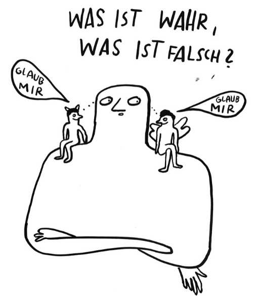

Bevor es losgeht
Wir beginnen mit einem Gedanken-Experiment. Stelle Dir vor, du recherchierst zu einem Thema im Internet und landest auf dieser Website:
Vielleicht denkst du jetzt:

Das wirkt auf mich nicht sehr plausibel und glaubwürdig. Aber wer weiß, vielleicht ist da doch etwas dran?
Wahrscheinlich hast du nun keine Zeit, um die Website einer langwierigen Prüfung zu unterziehen. Vielleicht bist du dir auch unsicher, was genau du eigentlich wie prüfen sollst: Könnte es relevant sein, dass die Website Werbeanzeigen schaltet? Deutet die eher unprofessionelle Gestaltung auf fehlende Seriosität hin? Würde es helfen, sich das Impressum anzusehen?
Aus unserer Perspektive wird Faktenprüfung dann wirkungsvoll, wenn wir uns nicht nur mit dem Inhalt an sich beschäftigen, sondern uns auch den Kontext ansehen. Mögliche Fragen in diesem Sinne können sein: Wer berichtet sonst noch von dieser Information? Von wem wird die Information verbreitet? Worauf bezieht sich die Information?
Dieser Ansatz hat drei entscheidende Vorteile:
- Er passt zu einer digitalisierten und vernetzten Gesellschaft, in der wir ständig mit immer neuen Informationen konfrontiert sind. Er funktioniert schnell und zuverlässig.
- Er können auf das Wissen anderer zurückgreifen: Wir müssen beispielsweise nicht selbst herausfinden, ob ein Bild gefälscht ist, wenn jemand anderes diese Information bereits überprüft hat.
- Er kann leicht und von jeder Person genutzt werden. Es geht weniger um 'Wissenschaft', sondern eher um prakische 'Lifehacks' und Handlungsroutinen.
Der Ansatz beinhaltet vier einfach zu erlernende Tipps:
- Stopp: Will ich das wirklich lesen/ hören/ ansehen?
- Quellen überprüfen: Von wem stammt die Information?
- Weitere Informationen finden: Was sagen andere dazu?
- Zurück zum Ursprung: Auf was bezieht sich die Information genau?
Du kannst diese vier Tipps unabhängig voneinander anwenden oder miteinander kombinieren. Wie genau das funktioniert, erkunden wir auf den nächsten Seiten. Lass uns mit dem ersten Tipp - dem 'Stopp' - beginnen!